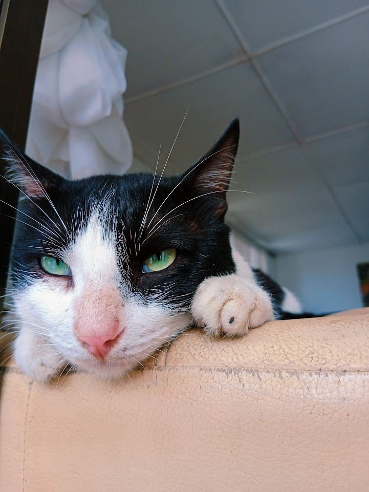
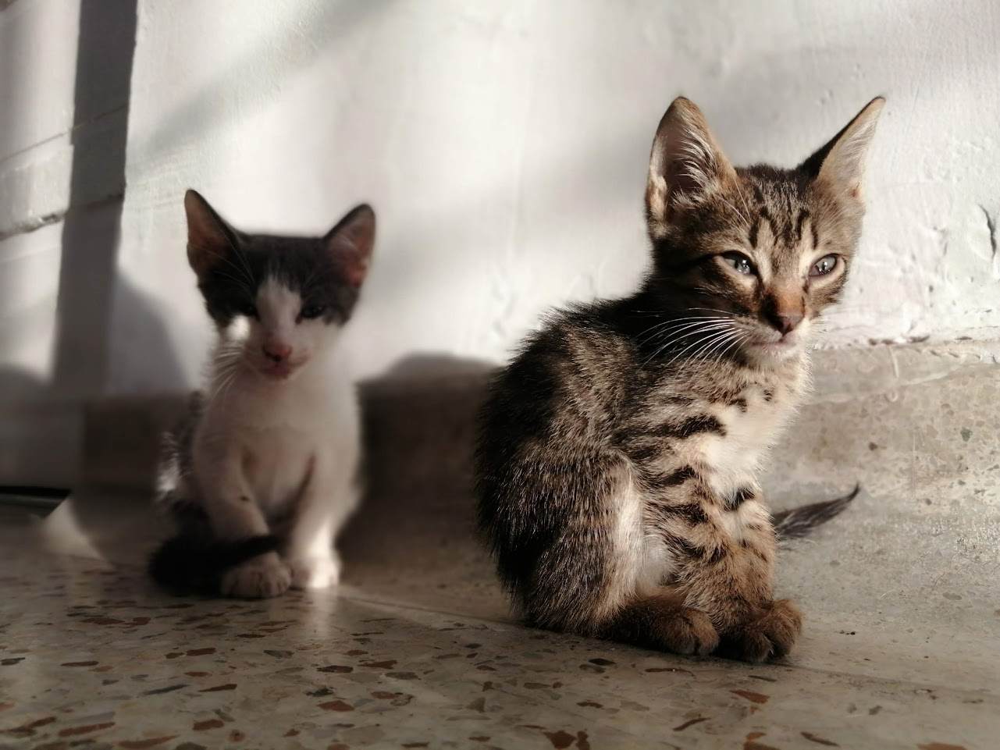
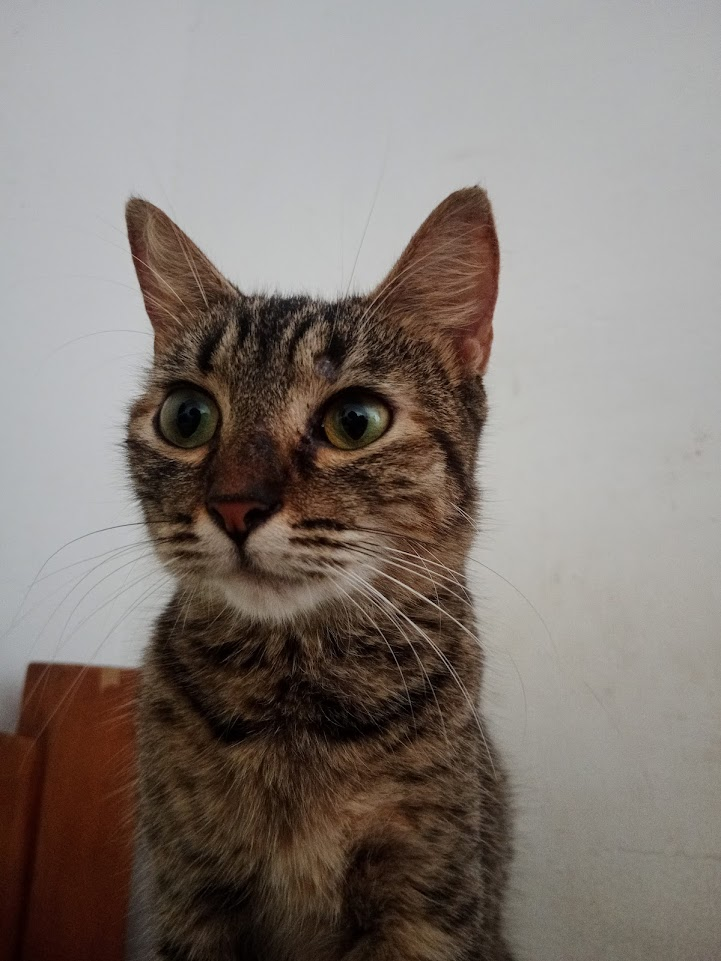
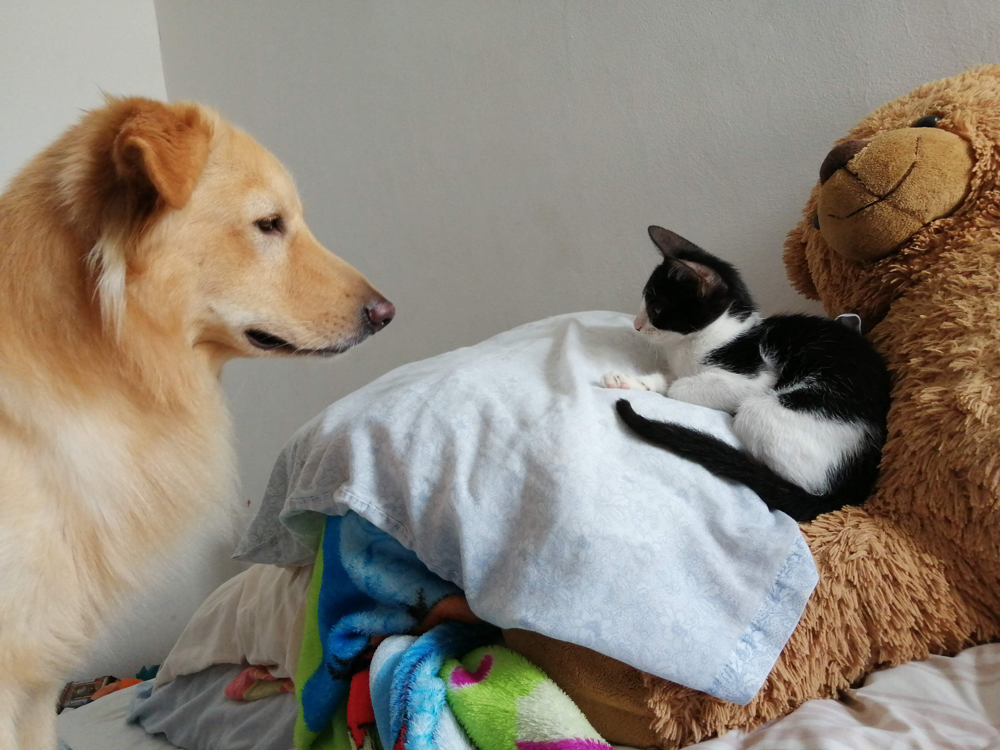
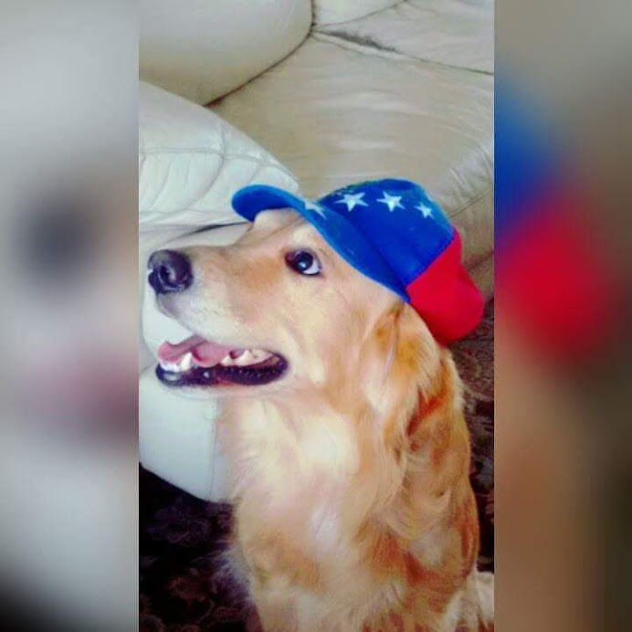
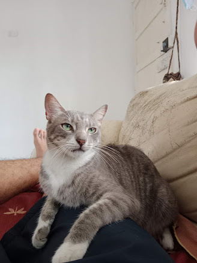

Mis Mascotas
¿Qué clase de mascotas he tenido?
Desde muy pequeño me han criado con animales, así que desarrollé mucho amor por ellos. He tenido desde huskys hasta loros, pasando por mi vida los más importantes o los que más han durado conmigo: 6 gatos y 2 golden retriever.

Azula

Gato

Kira

Jota

Tobby

Aqua
Volver al inicio